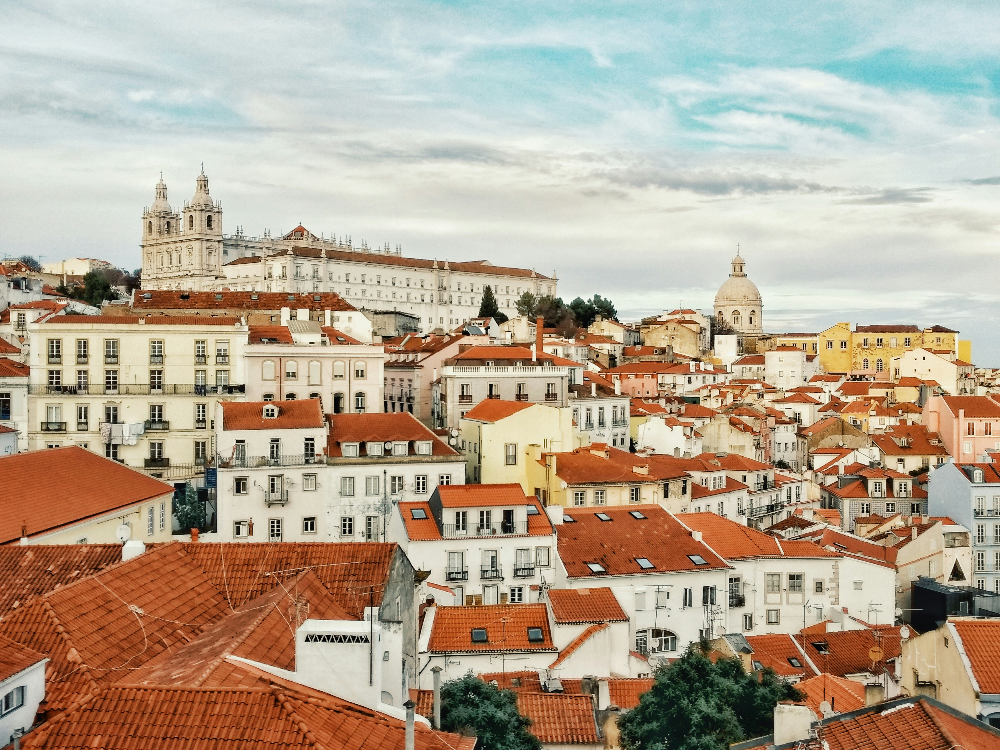
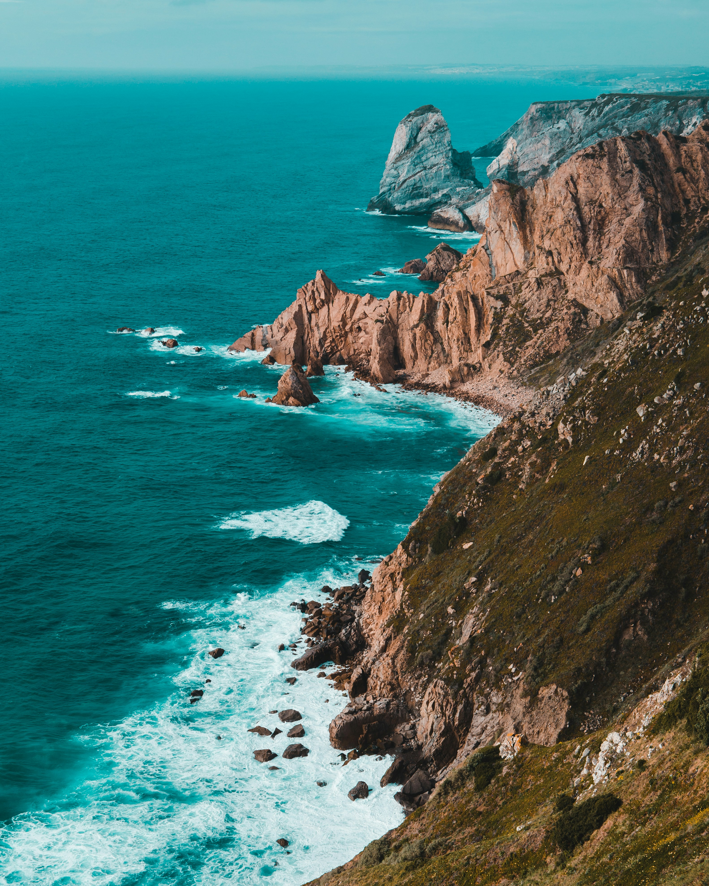

Portugal is a country of extraordinary soul and Atlantic spirit. Located at the
very western edge of Europe, it is a land where the melancholic beauty of Fado music echoes through the narrow,
tiled streets of ancient cities. From the golden cliffs of the Algarve to the terraced vineyards of the Douro
Valley, Portugal offers a quiet, understated elegance that celebrates tradition, craftsmanship, and the eternal
call of the sea.
1. Lisbon: The Soulful Capital of Light

Lisbon is a city of luminous white stones and yellow trams, where the past and present
coexist in a perfect, sun-drenched harmony. Spanning seven hills overlooking the Tagus River, the city is a
living museum of Atlantic history and maritime exploration. In the ancient Alfama district, laundry flutters
like prayer flags from wrought-iron balconies, while the haunting, soulful sound of Fado music drifts from
candle-lit taverns. Walking through its steep, tiled streets is a journey through centuries of architectural
styles, from Manueline ornate flourishes to Pombaline austerity. Lisbon's unique light, reflected off the
white limestone pavements known as 'calçada', creates a golden aura that is especially magical at sunset. It
is a city that invites you to lose yourself in its labyrinthine alleys, discovering hidden miradouros
(viewpoints) that offer breathtaking vistas of terracotta rooftops and the shimmering blue river beyond.
2. Sintra: A Fairytale in the Clouds

Just a short journey from Lisbon lies Sintra, a mystical hilltop retreat that feels as
though it was lifted from the pages of a Romantic storybook. This UNESCO World Heritage site served as the
summer sanctuary for the Portuguese monarchy, who commissioned extravagant palaces and enchanted gardens
nestled among the misty hills of the Serra de Sintra. Crowning its highest peak is the Pena Palace, a riot
of flamboyant colors, onion domes, and neo-Romantic details that defy architectural conventions. Nearby, the
Moorish Castle offers a rugged contrast with its ancient stone walls snaking across the ridges like a
miniature Great Wall of China. Sintra is a landscape of profound mystery, where the microclimate often
cloaks the forests in a silver mist, making the moss-covered boulders and hidden grottos of Quinta da
Regaleira feel truly otherworldly. It is a place where fantasy and nature converge in a spectacular display
of 19th-century imagination.
3. The Douro Valley: A Masterpiece of Vineyards

The Douro Valley is one of the oldest demarcated wine regions in the world and a UNESCO
World Heritage site of staggering agricultural beauty. Here, the Douro River winds its way through steep,
terraced hillsides that have been painstakingly carved by generations of winemakers into a giant, green
amphitheater. This is the birthplace of Port wine, and the landscape is dotted with historic quintas
(estates) where visitors can learn about the traditional methods of grape cultivation and wine production.
Whether traveling by train along the historic Linha do Douro or by boat on the tranquil river, the vistas
are a testament to the enduring relationship between the Portuguese people and their land. In the autumn,
the valley transforms into a sea of red and gold as the vines change color, creating a vibrant painting that
stretches as far as the eye can see. It is a region of profound peace and epic proportions, where time seems
to slow down to the rhythm of the harvest.
4. Algarve: Golden Cliffs & Azure Waters

The Algarve, Portugal's southernmost region, is a coastline of extraordinary natural
drama, defined by its golden limestone cliffs, hidden sea caves, and crystal-clear turquoise waters. At
Ponta da Piedade near Lagos, the sea has carved the rocks into spectacular arches and pillars that rise from
the Atlantic like ancient sculptures. The region offers a diverse range of experiences, from the
sophisticated marinas of Vilamoura to the wild, windswept beaches of the Costa Vicentina, a paradise for
surfers and nature lovers. Beyond the sand and surf, the Algarve’s interior is a landscape of almond and
cork trees, where whitewashed villages like Silves and Loulé maintain a traditional way of life. The scent
of blooming orange blossoms and grilled sardines fills the air, capturing the sensory essence of a
Mediterranean summer. The Algarve is a place where the power of the ocean meets the warmth of the sun,
creating a sanctuary for those seeking both adventure and relaxation.
5. Madeira: The Island of Eternal Spring

Madeira, known as the 'floating garden' of the Atlantic, is a volcanic island of
breathtaking verticality and eternal spring. Its unique landscape is characterized by its lush, sub-tropical
vegetation, dramatic sea cliffs, and an intricate network of levadas—ancient irrigation channels that now
serve as spectacular hiking trails. The island rises steeply from the ocean, culminating in the jagged peaks
of Pico do Arieiro and Pico Ruivo, which often sit above the clouds. Funchal, the capital, is a vibrant city
of colorful markets, botanical gardens, and colonial architecture, where the traditional wicker sledges
still glide down the steep streets of Monte. Madeira is also world-renowned for its fortified wine and its
spectacular New Year's Eve fireworks. Whether you are exploring the laurel forests of the interior or
enjoying the freshwater pools carved into the lava rock at Porto Moniz, Madeira is a destination of raw
natural power and delicate botanical beauty.
6. Azores: Nature's Untouched Paradise

The Azores is a remote archipelago of nine volcanic islands in the middle of the North
Atlantic, often described as the 'Hawaii of Europe' for its lush greenery and dramatic geological
formations. This is a land of geothermal wonders, from the steaming hot springs of Furnas to the twin
volcanic lakes of Sete Cidades, one blue and one green, nestled within a massive crater. The islands are a
sanctuary for biodiversity, offering some of the best whale and dolphin watching in the world. The pace of
life here is deeply connected to the rhythm of the earth and sea; agriculture and fishing remain the
mainstays of the local economy. Hiking through the emerald-green pastures, where cows graze on the edges of
volcanoes, feels like discovering a lost paradise. The Azores is a destination for the true adventurer, a
place of untamed beauty and profound isolation that offers a complete escape from the modern world.
7. Cascais: Elegant Coastal Retreat

Cascais is a sophisticated coastal town that combines its origins as a traditional fishing
village with the elegance of a royal summer retreat. Located just west of Lisbon, the 'City of Kings and
Fish' attracted European royalty during the late 19th and early 20th centuries, leaving a legacy of opulent
mansions and grand hotels. The town’s historic center is a charming maze of cobblestone streets, filled with
upscale boutiques, seafood restaurants, and vibrant museums. Cascais is also famous for its dramatic
coastline, featuring the Boca do Inferno (Hell’s Mouth), an abyss in the cliffs where the Atlantic waves
crash with thunderous power. Nearby, the Guincho beach offers a wilder experience, known for its windswept
dunes and world-class surfing. Cascais is the perfect blend of cosmopolitan flair and Atlantic ruggedness,
offering a refined lifestyle that remains deeply connected to its maritime heritage.
8. Évora: A Journey Through History

Évora, located in the heart of the Alentejo region, is a city where history is literally
etched into the stone. Enclosed by medieval walls, this UNESCO World Heritage site is home to an
extraordinary variety of monuments, ranging from the standing Corinthian columns of the 1st-century Roman
Temple to the somber Gothic grandeur of the Cathedral. Most haunting of all is the Capela dos Ossos (Chapel
of Bones), whose walls are entirely lined with human remains as a memento mori. Beyond its monuments, Évora
captures the essence of the Alentejo lifestyle: slow, contemplative, and deeply rooted in the land. The
city's white-roofed houses and sun-drenched squares provide a peaceful backdrop for enjoying the region’s
famous cork products, olive oils, and hearty rustic cuisine. Évora is a place where the layers of Roman,
Moorish, and medieval history converge, offering a profound and tranquil journey into the soul of inland
Portugal.
The Endless Charm of Portugal: Portugal is a country
that invites you to slow down and savor the moment. From the simple perfection of a "pastel de nata" to the wild
majesty of the Atlantic coast, it is a land that remains true to its heritage while welcoming the future.
Whether you are following the soulful echoes of Fado in Lisbon, exploring the fairytale palaces of Sintra, or
finding peace in the vineyards of the Douro, Portugal offers a depth of beauty that is both understated and
profound. Discover the spirit of Portugal for yourself. Bom proveito!
The Signature of Excellence
Why Choose Luxe Voyages?
Curated Excellence
Every destination and accommodation is hand-selected to meet the
highest standards of luxury.
Direct Booking
Book directly with verified premium providers to ensure the best rates
and exclusive perks.
Global Legacy
Our worldwide presence ensures you have premium support wherever your
journey takes you.
Guest Experiences
From Our Global Travelers
"Luxe Voyages didn't just book a trip; they crafted an unforgettable experience. Every detail
was handled with unparalleled professionalism."
Julian Montgomery
Verified
Global
Traveler